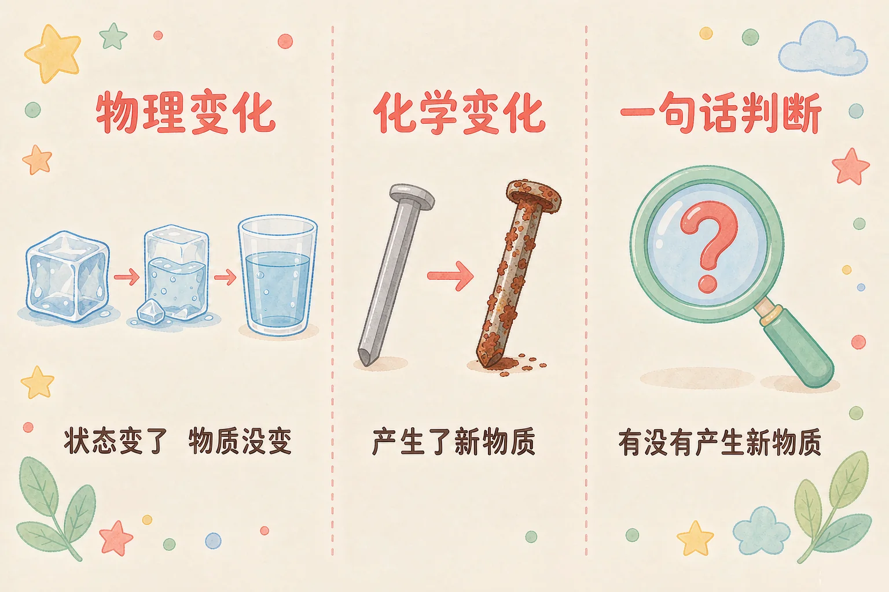
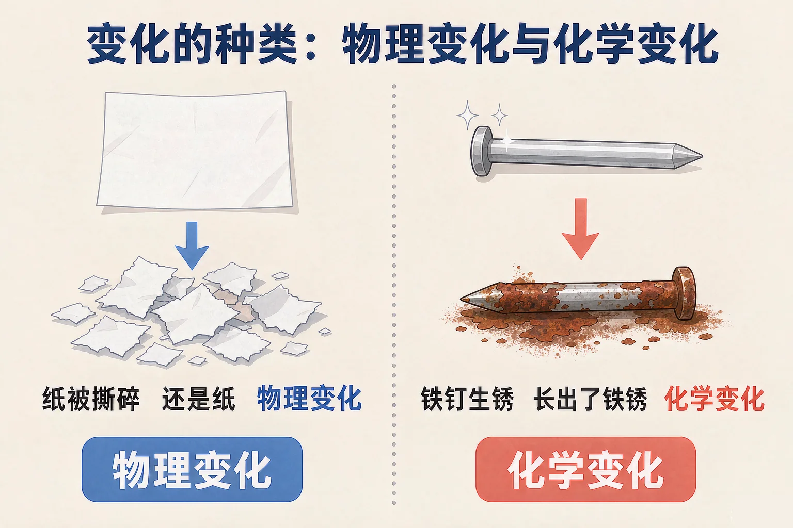
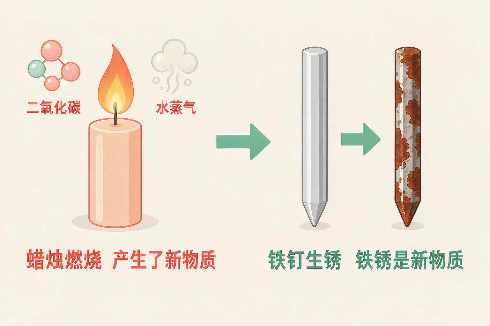

小学六年级 · 物质科学 · 物质的变化
蜡烛烧短了，蜡烛软了，同样是变了样子——它们变的是同一回事吗？

选一个你真正好奇的问题，后面的实验都会围着它转。
选择或输入后，这节课会围绕你的问题展开。
先凭直觉选一个，选完立刻看到解释——错了也没关系，正好知道要重点听哪里。
1. 冰化成水，这个变化里有没有产生新物质？
固体变液体只是状态改变，物质本身仍然是水，所以没有新物质产生。错因提醒：常见错误是看到样子变了就判成化学变化。请务必回到那一句：有没有产生新物质。
2. 判断一个变化是不是化学变化，最关键的依据是：
现象只是线索，最终依据只有一个：有没有产生和原来不同的新物质。错因提醒：很多同学会把剧烈程度和变化类型搞混——爆炸般快的也可能只是物理变化，安静缓慢的也可能在生成新物质。
3. 蜡烛燃烧后越来越短，烧掉的部分去哪儿了？
燃烧产生了二氧化碳和水蒸气等新物质，以气体形式散到空气中，所以蜡烛看着像消失了。错因提醒：不要误认为物质凭空消失。变化前后物质的总量是守恒的，只是它跑到了我们看不见的地方。
冰化成水，纸被撕碎，玻璃杯打碎——这些都叫物理变化。判断的依据只有一句话：有没有新物质产生。
变了什么
形状、大小、状态（固/液/气）发生变化。
没变什么
构成物体的材料还是原来那种，能想办法变回去。

先点一张卡片，再点你认为正确的筐。每放一次都会立刻告诉你理由。
点一张卡片开始分类。
铁钉生锈、蜡烛燃烧、小苏打和白醋混合——这些是化学变化。它们的共同点是：产生了和原来不同的新物质。
化学变化常见的五个现象（只是线索，不是依据）

水烧开也冒气泡、电灯也发光发热，但它们都是物理变化。所以不能只看现象，最后一定要回到那句话：有没有产生新物质。
两杯液体摆在这里，左边是小苏打，右边是糖水。分别混合一下，对比它们的现象。
先选左边或者右边动手混合，再对比两边的现象有什么不同。
题目：把一枚光亮铁钉放在潮湿的空气中，几天后表面变成红棕色。这个变化是物理变化还是化学变化？请说明理由。
先凭直觉选一个，选完立刻看到解释——错了也没关系，正好知道要重点听哪里。
1. 下面哪个变化属于化学变化？
只有铁钉生锈产生了新物质（铁锈），另外两个都只是形状或状态改变。
2. 水烧开时冒出大量气泡，这个变化是：
冒气泡只是现象。水蒸气冷却后又变回水，没有新物质产生，所以是物理变化。
3. 下列说法正确的是：
发光发热只是线索；判断的唯一依据是有没有新物质产生。
请找出 3 种物理变化和 3 种化学变化，每一种都要说清理由。
🧊 物理变化（写 3 种）
🔥 化学变化（写 3 种）
必须回答的问题：你写的每一种变化里，有没有产生新物质？说出你的判断依据。
先凭直觉选一个，选完立刻看到解释——错了也没关系，正好知道要重点听哪里。
1. 把一根火柴点燃，火焰熄灭后只剩一小截黑色残渣。这个变化是：
燃烧生成了二氧化碳、水蒸气和黑色的炭等新物质，所以是化学变化。
2. 气球吹大以后松开手，气球飞走变小，这是：
空气只是进出气球，没有产生新物质。
3. 妈妈把土豆切成丝，过一会儿土豆丝表面变黑了，这个变化：
颜色变深是产生了新物质的信号。切开后土豆里的成分接触空气发生反应，属于化学变化。
回到开头那两支蜡烛：被点燃的那支，产生了二氧化碳和水蒸气等新物质，是化学变化；只是被暖气烤软的那支，形状变了但没有新物质，是物理变化。看起来都是变了样子，本质并不一样。
三层练习，做完第一、二层就算通关；第三层留给愿意继续探索的同学。
⭐ 基础巩固（必做）
⭐⭐ 能力应用（必做）
⭐⭐⭐ 迁移挑战（选做）
左边是学它之前要先会的，右边是学会之后可以继续探索的，下面是同一领域的伙伴知识。